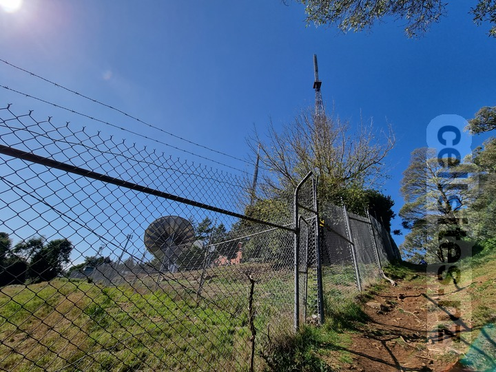
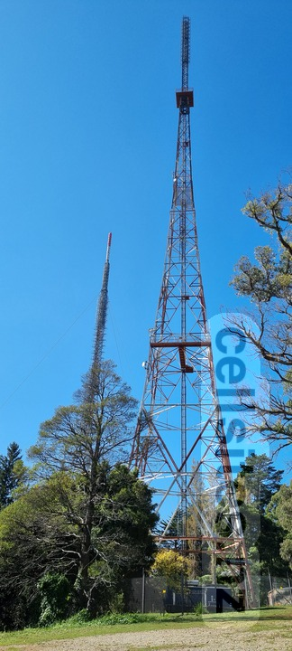
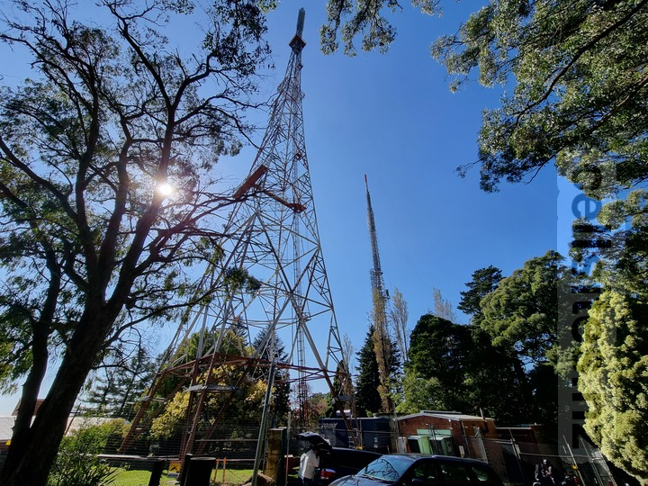
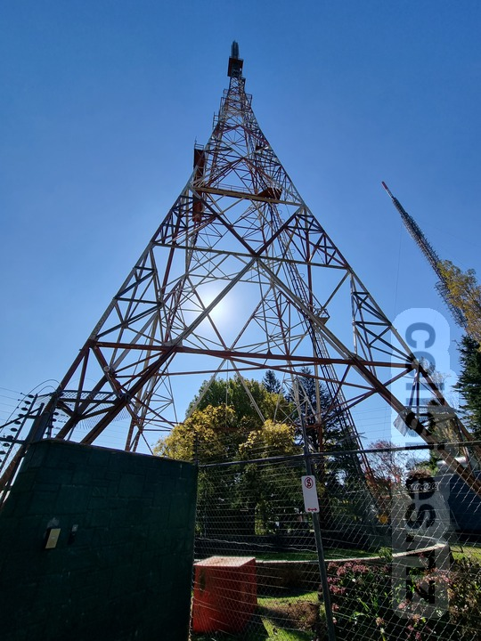

View of the compund. South mast on far right.

South mast in foreground on right hand side.

South mast in foreground on left hand side.

South mast viewed from near the bottom of the mast.South mast and access gate viewed from near the bottom of the mast.